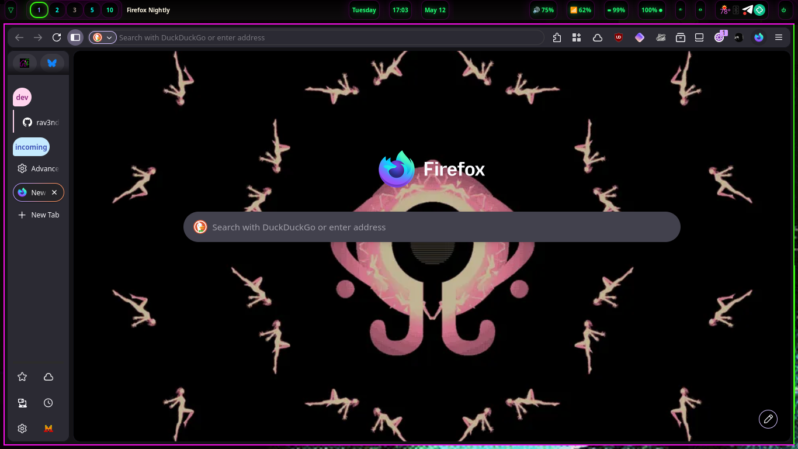
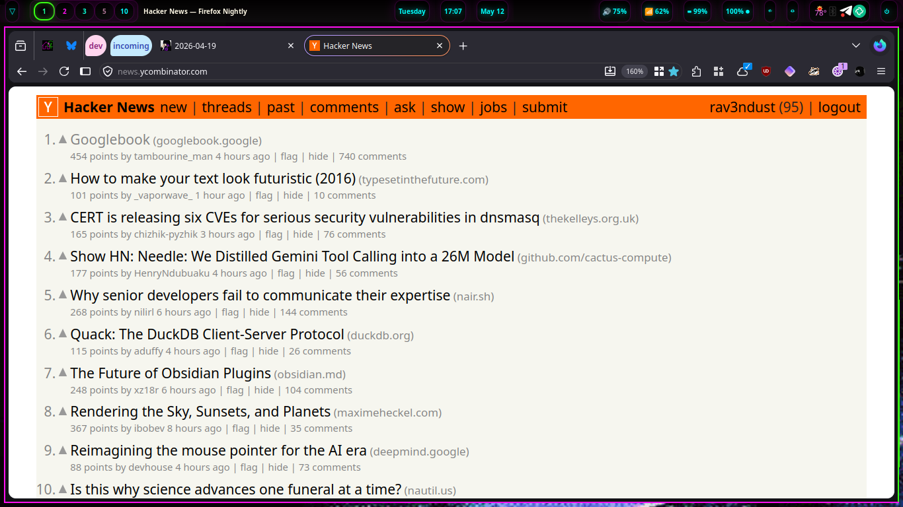

now | blog | wiki | recipes | bookmarks | contact | about | donate
* * * back home * * *
checking out the new UI in firefox nightly
2026-05-12

Several months ago, I heard about the forthcoming redesign in the Firefox UI, called "Nova". Since I first heard about it, I have fired up Firefox Nightly every now and again and checked out the progress on it. It has been coming along quite nicely, and I thought I'd share what it's shaping up to look like since the original announcement.
I know that the Nova design seems to be a little controversial among Firefox users from what I've seen online. I'm not here to debate about that, since it is subjective. I will say that I, personally, like the Nova design and think it looks new and fresh. So, with that out of the way, let's check it out and see how it is looking!

The Nova redesign brings in some 'floating' UI elements. It also makes vertical tabs a little more pleasant to use, in my opinion. The main thing that currently needs some attention, however, is compact tabs in horizontal tabs mode. Currently, it is not as compact when enabled as on the "previous" Firefox UI design. As the Nova design isn't finalized yet, I suspect this will be improved upon.
Things are a little more 'rounded' as you can probably tell when looking at the UI as well. This will be a point of contention for many people, I am sure, but I think it looks fine. As of right now, the main thing I'd like to see some improvement on is the compactness of horizontal tabs, as I have been going back and forth between horizontal and vertical tabs in every browser that I use, and I prefer the compact look that minimizes, as much as possible, the amount of space that the browser chrome takes up.
If you want to try out the Nova redesign on your own machine, follow these steps:
about:config in your address bar.browser.nova.enabled flag and flip it to true.You can now see the Nova UI elements on your browser. If you don't like it, you can always revert to the old UI by turning the flag off again.
I have been opening up Nightly every now and again and testing it out and seeing how far it has been coming along, which has been fun. You can do the same if you'd like, and as the Nova redesign finalizes, it will begin to trickle down from the Nightly channel into Dev, Beta, and Stable versions of Firefox.